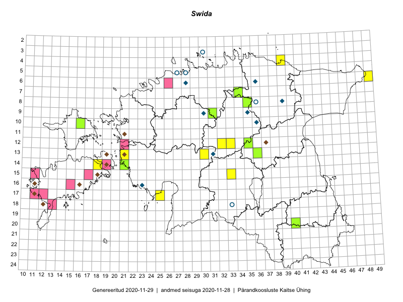

Swida — kontpuu
Cornaceae :: Swida (78); Cornus (15)

Kaart põhineb 93 kirjel:
vaatlusi 28
herbaareksemplare 65
Taime kaasaegsed ja ajaloolised leiukohad asuvad 69 ruudus.
Tingmärgid ja ruutude arvud periooditi (U1 / V2 )
█ 2006–2020 (52/–)
◆/◇ 1971–2005 (2/0)
○ 1921–1970 (20/0)
+ kuni 1920 (0/0)
× hävinud (–/0)
? kaheldav (–/0)
| Ruut | Leidja(d) | Leiuaeg | Kirje |
|---|---|---|---|
| 16-40 | Aivi Kasik, Martin Tikk, Thea Kull, Weralda Lakeman | 2019-06-14 | ruut/ala: Cornus |
| 06-28 | M. Kask | 1979-07 | ruut/ala: Cornus |
| 08-36 | J. Talts | 1935-07–1936-07 | ruut/ala: Cornus |
| 16-23 | M. Kask, M. Leht, L. Viljasoo | 1979-08 | ruut/ala: Cornus |
| 19-29 | Peedu Saar, Liina Oja | 2015-05-22 | ruut/ala: Swida |
| 08-45 | Peedu Saar, Liina Oja | 2015-07-22 | ruut/ala: Swida |
| 08-45 | Peedu Saar, Liina Oja | 2015-07-22 | ruut/ala: Swida |
| 14-31 | Peedu Saar, Liina Oja | 2015-06-10 | ruut/ala: Swida |
| 13-39 | Eeva-Maria Jeletsky, Tarmo Niitla | 2015-05-03 | ruut/ala: Swida |
| 13-29 | Liina Oja, Ott Luuk | 2015-05-09 | ruut/ala: Swida |
| 14-42 | Karin Kikas, Elle Rajandu | 2015-05-18 | ruut/ala: Swida |
| 22-42 | Karin Kikas, Elle Rajandu | 2015-05-25 | ruut/ala: Swida |
| 07-39 | Kaili Orav, Silvia Pihu | 2015-06-17 | ruut/ala: Swida |
| 05-42 | Kaili Orav, Silvia Pihu | 2015-06-18 | ruut/ala: Swida |
| 14-18 | Karin Kikas, Elle Rajandu | 2015-07-21 | ruut/ala: Swida |
| 14-18 | Karin Kikas, Elle Rajandu | 2015-07-21 | ruut/ala: Swida |
| 18-43 | Meeli Mesipuu, Thea Kull | 2016-04-25 | ruut/ala: Swida |
| 21-35 | Tiit Hallikma, Ott Luuk | 2016-04-27 | ruut/ala: Cornus |
| 17-29 | Tiit Hallikma, Ott Luuk | 2016-04-28 | ruut/ala: Cornus |
| 04-39 | Tiit Hallikma, Ott Luuk | 2016-05-19 | ruut/ala: Cornus |
| 19-37 | Liina Oja, Maret Gerz | 2016-06-17 | ruut/ala: Swida |
| 19-33 | Liina Oja, Elle Rajandu | 2016-07-18 | ruut/ala: Swida |
| 21-35 | Peedu Saar, Ott Luuk | 2016-09-22 | ruut/ala: Swida |
| 19-31 | Peedu Saar, Ott Luuk | 2016-10-06 | ruut/ala: Swida |
| 17-25 | Tiit Hallikma, Tõnu Ploompuu | 2016-07-06 | ruut/ala: Swida |
| 20-32 | Peedu Saar, Thea Kull | 2017-05-04 | ruut/ala: Cornus |
| 06-33 | Ott Luuk, Peedu Saar | 2017-05-11 | ruut/ala: Swida |
| 19-38 | Ott Luuk, Peedu Saar | 2017-07-25 | ruut/ala: Swida |
| 17-43 | Viiu Hein, Liili Siilbek | 1960-06-08 | TAA0071967: Swida |
| 13-33 | Agnes Ojaveer | 1966-06-13 | TAA0071974: Swida |
| 11-31 | Liivia Laasimer | 1966-06-18 | TAA0071975: Swida |
| 13-34 | Alma Saare, Silvi Eilart | 1966-06-13 | TAA0071977: Swida |
| 14-21 | Juta Kaasik, Viiu Hein | 1960-05-30 | TAA0071982: Swida |
| 18-43 | Silvia Talts, Visolde Puusepp | 1960-06-11 | TAA0071985: Swida |
| 18-42 | Silvia Krastin | 1960-06-13 | TAA0071986: Swida |
| 07-24 | Maret Kask | 1960-08-04 | TAA0071987: Swida |
| 07-24 | Maret Kask | 1960-08-04 | TAA0071988: Swida |
| 05-26 | Silvia Talts, Kai Lang | 1960-08-13 | TAA0071990: Swida |
| 06-27 | Silvia Talts, M. Lätt | 1960-08-14 | TAA0071994: Swida |
| 05-48 | Agnes Ojaveer | 1964-07-28 | TAA0071997: Swida |
| 19-38 | Helga Tamm, Ella Tammemägi | 1960-06-24 | TAA0072002: Swida |
| 18-42 | Salme Kask, Ella Tammemägi | 1960-06-15 | TAA0072003: Swida |
| 06-40 | Linda Viljasoo | 1963-06-03 | TAA0072004: Swida |
| 17-37 | Alma Saare, Silvi Pärn | 1962-07-02 | TAA0072005: Swida |
| 10-22 | Agnes Ojaveer, H. Paavle | 1963-08-02 | TAA0072011: Swida |
| 05-27 | Hugo Salasoo | 1935-06-23 | TAM0006079: Swida |
| 05-27 | H. Sogenbits | 1926-06-24 | TAM0006080: Swida |
| 05-27 | Erik Sits | 1929-06-19 | TAM0006081: Swida |
| 03-30 | Gustav Vilbaste | 1948-07-10 | TAM0006082: Swida |
| 05-28 | Gustav Vilbaste | 1946-08-27 | TAM0006083: Swida |
| 14-31 | Peedu Saar, Liina Oja | 2015-06-10 | TAA0116538: Cornus |
| 17-38 | Peedu Saar, Thea Kull | 2015-06-17 | TAA0116539: Cornus |
| 16-25 | Peedu Saar, Liina Oja | 2015-05-21 | TAA0116540: Cornus |
| 14-21 | Peedu Saar, Elle Roosaluste | 2015-07-07 | TAA0116541: Cornus |
| 08-35 | Jana-Maria Habicht | 2015-07-15 | TAM0117571: Swida |
| 07-34 | Jana-Maria Habicht | 2015-07-20 | TAM0117572: Swida |
| 07-34 | Ester Valdvee | 2015-09 | TAM0118175: Swida |
| 08-31 | Peedu Saar, Toivo Sepp | 2016-07-18 | TAA0133975: Cornus |
| 17-43 | Liina Oja | 2016-06-13 | TAA0133976: Cornus |
| 18-26 | Peedu Saar, Ott Luuk | 2016-06-10 | TAA0133977: Cornus |
| 05-42 | Kaili Orav, Silvia Pihu | 2015-06-18 | TAA0135452: Swida |
| 07-39 | Kaili Orav, Silvia Pihu | 2015-06-17 | TAA0134808: Swida |
| 09-35 | Toomas Kukk, Tiit Hallikma | 2016-07-25 | TAA0137195: Swida |
| 18-29 | Toomas Kukk, Tiit Hallikma | 2016-06-04 | TAA0137250: Swida |
| 18-29 | Toomas Kukk, Tiit Hallikma | 2016-06-04 | TAA0137251: Swida |
| 04-40 | Ott Luuk | 2016-07-28 | TAA0137961: Swida |
| 13-43 | Thea Kull, Meeli Mesipuu | 2015-07-22 | TAA0139336: Swida |
| 08-43 | Thea Kull, Eerik Leibak | 2015-07-24 | TAA0139337: Swida |
| 06-25 | Toomas Kukk, Sander Laherand | 2016-07-05 | TAA0139569: Swida |
| 06-25 | Toomas Kukk, Sander Laherand | 2016-07-05 | TAA0139570: Swida |
| 05-25 | Toomas Kukk, Sander Laherand | 2016-07-05 | TAA0139589: Swida |
| 05-25 | Toomas Kukk, Sander Laherand | 2016-07-05 | TAA0139590: Swida |
| 20-26 | Indrek Tammekänd | 2016-08-17 | TAA0140030: Swida |
| 18-33 | Thea Kull, Indrek Tammekänd | 2016-07-19 | TAA0139981: Swida |
| 12-31 | Indrek Tammekänd | 2016-07-16 | TAA0139947: Swida |
| 11-30 | Toivo Sepp | 2015-09-21 | TAA0140306: Swida |
| 07-23 | Mari Reitalu, Indrek Tammekänd | 2017-08-10 | TAA0143417: Swida |
| 19-27 | Indrek Tammekänd | 2017-08-07 | TAA0143422: Swida |
| 14-26 | Indrek Tammekänd | 2017-09-04 | TAA0143509: Swida |
| 05-27 | Toomas Kukk | 2017-06-22 | TAA0142213: Swida |
| 10-39 | Ott Luuk, Eerik Leibak | 2016-08-03 | TAA0145593: Swida |
| 13-35 | Ott Luuk, Hannes Pehlak | 2016-07-22 | TAA0144830: Swida |
| 18-30 | Ott Luuk, Susanna Vain, Raivo Kalle | 2016-07-19 | TAA0144831: Swida |
| 18-30 | Ott Luuk, Susanna Vain, Raivo Kalle | 2016-07-19 | TAA0144832: Swida |
| 14-29 | Ott Luuk, Hannes Pehlak | 2015-06-10 | TAA0144836: Swida |
| 23-37 | Peedu Saar, Timo Luhamäe | 2019-07-11 | TAA0149683: Swida |
| 23-37 | Peedu Saar, Timo Luhamäe | 2019-07-11 | TAA0149684: Swida |
| 21-40 | Toomas Kukk, Indrek Tammekänd | 2019-07-10 | TAA0148876: Swida |
| 06-26 | Albert Üksip, Linda Viljasoo | 1960-08-07 | TAA0072006: Swida |
| 06-26 | Albert Üksip, Linda Viljasoo | 1960-08-07 | TAA0072007: Swida |
| 03-30 | H. Hendrikson | 1936-05-24 | TAM0006076: Swida |
| 03-30 | H. Lippmaa | 1931-06-18 | TAM0006077: Swida |
| 10-16 | Toomas Kukk, Eerik Leibak | 2019-07-01 | TAA0149012: Swida |
Ruutude arv uue atlase andmekogu järgi. Muuhulgas arvestab vanemat herbaariumi, 2005. aasta atlase välitöölehtedelt uuesti digitaliseeritud andmeid jne. Uue atlase andmekogust pärinevad andmed on kaardile kantud siniste sümbolitega.↩︎
Ruutude arv 2005. aasta atlase (Kukk, T., Kull, T., Eesti taimede levikuatlas. Eesti Maaülikool, Põllumajandus- ja Keskkonnainstituut, Tartu, 2005) järgi. Andmeallikana on kasutatud levik.exe programmi, kus igas ruudus on registreeritud vaid uusim leid. Seetõttu on vanemate perioodide kohta andmed puudulikud. Kasutatud levik.exe andmestikus leidub mõningaid kõrvalekaldeid atlase trükis ilmunud versioonist, sagedamini tarnade ja käpaliste seas. Lisaks leidub selles andmestikus valik liike (peamiselt väheste leidudega tulnuktaimed), mille kaarte trükis ei avaldatud. Vana atlase andmed ruutudest, milles ei ole uue atlase andmekogus leide enne 2006. aastat, on kaardil esitatud punaste sümbolitega. Vana atlase andmetel hävinud ja kaheldavaid leiukohti pole hilisemate (taas)leidude põhjal korrigeeritud.↩︎